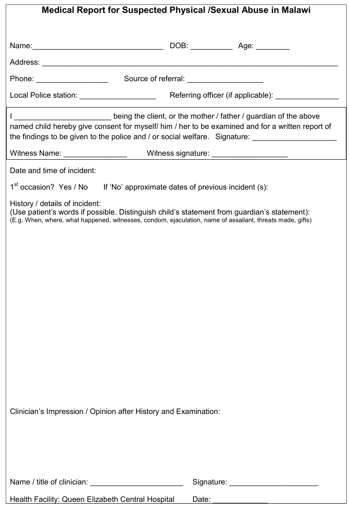
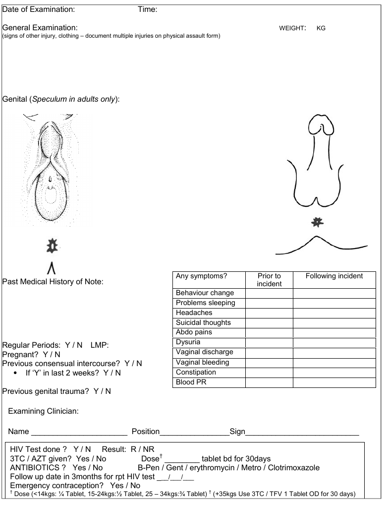

Child Sexual Abuse
Definitions (WHO 2009)
Child sexual abuse is the involvement of a child in sexual activity that he or she does not fully comprehend, is unable to give informed consent to, or for which the child is not developmentally prepared and cannot give consent, or that violates the laws or social taboos of society. Child sexual abuse is evidenced by this activity between a child and an adult or another child who by age or development is in a relationship of responsibility, trust or power, the activity being intended to gratify or satisfy the needs of the other person. This may include but is not limited to:
- the inducement or coercion of a child to engage in any unlawful sexual activity
- the exploitative use of a child in prostitution or other unlawful sexual practices
- the exploitative use of children in pornographic performance and materials
Defilement is unlawful carnal knowledge of a girl 13 or younger (Malawi Penal Code) and requires proof of penetrative sex. Case law suggest penetration is defined as the tip of the penis going beyond the labia majora.
Summary of procedure for dealing with child with possible sexual abuse
- Child should be seen in the One-Stop Centre (OSC) during working hours, or by registrar and a consultant out of hours
- Refer children seen out of hours to the OSC on the next working day for social welfare, legal, police and counselling support
- History and examination should take place in a place of privacy
- Use the correct examination and reporting forms (see below)
- Keep copies of records for OSC team
- Test for HIV and give PEP at THE SAME TIME THE CHILD IS SEEN – DO NOT DELAY
Important points in history
**In most cases, the history will be more important than the examination**
- Interview the parent alone, then the child alone if possible.
- Introduce yourself and build rapport (e.g. “tell me about school”)
- Interview rules (optional) - establish the need to tell the truth
- “If I ask you something, and you don’t know the answer – that’s o.k., just say ‘I don’t know.’”
- “We only tell the truth. Do you know the difference between a truth and a lie? Sometimes it’s scary to tell the truth, but it’s important so that I can help you.”
- Introducing the topic of concern
- “Do you know why you are here today?”
- “I am a doctor and talk to children about things that happen to them. Do you want to talk to me about things that happened to you?”
- Older children: “Part of my job is to take care of children who had really bad things happen to them… so don’t worry that you will say something that will surprise me – I won’t be surprised. And don’t worry that you will say something that will make me think bad of you”
- Free narrative
- “Tell me everything that happened, starting from the beginning”
- DO NOT INTERRUPT!
- Open questioning
- Who/ when/ where/ what
- Avoid ‘multiple choice’ questions, or questions with a one-word answer only
- “How did you know it was over?”
- Probe for behavioural or emotional problems which are common after abuse and can act as corroborating evidence in court. See sheet.
- Specific questions (optional)
- If they are hesitant, ask them “Are you afraid to tell me what really happened? What are you afraid will happen if you tell me?”
- Ask child to explain what they mean e.g. “Zoopusa means lots of different things to different people – what do you mean by zoopusa?”
- “Have you ever had sex with someone in the past because you wanted to”
- If victim suggests it was ‘consensual’, enquire about age of partner/ gifts given
- Conclusion of interview – assure them of safety
Important points on examination
- Examine whole body for signs of injury – not just the perineum
- Use the ‘frog –leg’ and ‘knee-chest’ positions
Interpretation of external genitalia findings
Normal and non-specific vaginal findings include:
- hymenal bumps, ridges and tags
- v-shaped notches located superior and lateral to the orifice, not extending to base of the hymen;
- vulvovaginitis
- labial agglutination
- vaginal discharge
Anatomical variations or physical conditions that may be misinterpreted or often mistaken for sexual abuse include:
- lichen sclerosis
- vaginal and/or anal streptococcal infections
- failure of midline fusion
- non-specific vulva ulcerations
- urethral prolapse
- unintentional trauma (e.g. straddle injuries) – usually SYMMETRICAL, on mons pubis/ labia majora only
- labial fusion (adhesions or agglutination)
Findings suggesting or confirming abuse include:
- acute abrasions, lacerations or bruising of the labia, perihymenal tissues, penis, scrotum or perineum
- hymenal notch/cleft extending through more than 50% of the width of the hymenal rim (confirmed in knee/ chest as supine view) – usually in ‘4 o’clock to 8 o’clock’
- scarring or fresh laceration of the posterior fourchette
- presence of sperm (confirmed on microscopy) or STD
If you are in doubt about the significance of your findings
- ask for someone with more experience to help
- refer to Adams et al J Paediatric Adolescent Gynaecology 2007 ‘Guidelines for medical care of children who may have been sexually abused or
- Guidelines for medico-legal care for victims of sexual violence World Health Organization 2003
|
Relevant investigations
- Swab fluid/ pus for microscopy for STI or sperm if available (rarely useful)
- HIV test after counselling (kits should be available in the AE ‘defilement kit’ in admissions or on MOYO ward)
- Pregnancy test if post-menarche
Reasons for admission
- You do not think the child will be safe going home – they may be subject to further abuse
- Surgical intervention is needed (rare)
Treatment
1. Antibiotics to prevent or treat STI
These are NOT generally recommended in pre-pubertal girls. However in our context with high rates of STI they should be prescribed in all children if there is clear evidence that penetration has taken place
- Metronidazole 5mg/kg TDS for 7 days
- Erythromycin 12.5 mg/kg QID for 7 days
- Gentamicin 6 mg/kg STAT IM
- Benzathine penicillin STAT (< 25 kg = 0.6 MU IM; > 25kg = 1.2 MU IM)
2. Post-exposure prophylaxis
PEP should be considered in ALL cases where a naked penis has touched naked skin or mucosa even where there are no physical signs.
The risk is low, but with rape there is often associated violence and genital trauma increasing the rate of transmission
The child is eligible for PEP if the child has presented within 72 hours of the assault and they are HIV negative and the family agree to comply with the treatment
Options are:
- 3TC/AZT BD for 30 days (<14kgs: ¼ Tablet, 14-24 kgs:½ Tablet, >25 –34kgs: ¾ Tablet) OR
- TDF/3TC 1 tablet OD for 30 days if >35kg
!!! A repeat HIV test is required at 3 and 6 months
3. Consider Tetanus Toxoid 0.5ml IM
4. Consider emergency contraception if post-menarchal and <72h from assault
- Postinor (Levonorgeterel 750mcg) 2 tablets STAT OR
- Lofemenal 4 tablets STAT, then 4 tablets 12 hours later
If unsure, consult O+G registrar or consultant on-call
Follow-up/ CSA procedures
Procedures and services for child protection in Malawi are evolving quickly and the up-to-date guidelines should always be adhered to. Currently:
- The guardians should be given the stamped medical report form to take back to the referring police station (they should get all the pages – history, examination and report)
- All children should be seen at the OSC as soon as possible – preferably the same or next working day.
- Keep a copy of all the ‘out of hours’ report forms in the ‘Child Sexual Abuse or defilement’ basket
Guidance for completing the medical report for the police
- Use the ‘Medical examination for suspected physical/sexual abuse’ forms
- These documents may be used as evidence before a court
- WRITE LEGIBLY
- Briefly summarise the history. Use the child’s words if possible
- Summarise and document the physical findings
- Avoid terms such as ‘hymen intact’ or ‘hymen perforated’– better ‘no signs of injury to hymen’ or ‘evidence of injury to the hymen’
WRITE A CONCLUSION/ OPINION: (suggestions in italics)
- ‘In my opinion…..’
- State if you think the child’s history is cogent and credible
- If the physical findings are normal, remember this does not exclude the possibility that penetration has taken place ‘the examination is normal, but this does not rule-out the possibility of penetration, and these findings are consistent with the history given to me by the child’
- If there are physical findings, state if they are consistent with the history given to you
- If there is clear physical evidence of penetration, state this clearly ‘these findings are highly suggestive of penetration/ confirm that penetration has taken place’
- Be cautious of interpreting the ages of injuries ‘the healed hymenal tear confirms that penetration has taken place, but it is impossible to date when penetration occurred’
- Do not be afraid of stating your uncertainty ‘the child was unable to provide any details in her history that would confirm that physical contact occurred’
- YOU ARE NOT THE ‘JUDGE AND JURY’ BUT THE PROSECUTOR AND COURT WILL BENEFIT FROM A CLEAR STATEMENT OF YOUR OPINION
References:
- Guidelines for medico-legal care for victims of sexual violence. World Health Organization 2003 whqlibdoc.who.int/publications/2004/924154628X.pdf
- Adams JA et al ‘Guidelines for Medical Care of Children who May Have Been Sexually Abused’ J Pediatr Adolesc Gynecol (2007) 20:163-172 [AAP
recommendations]

